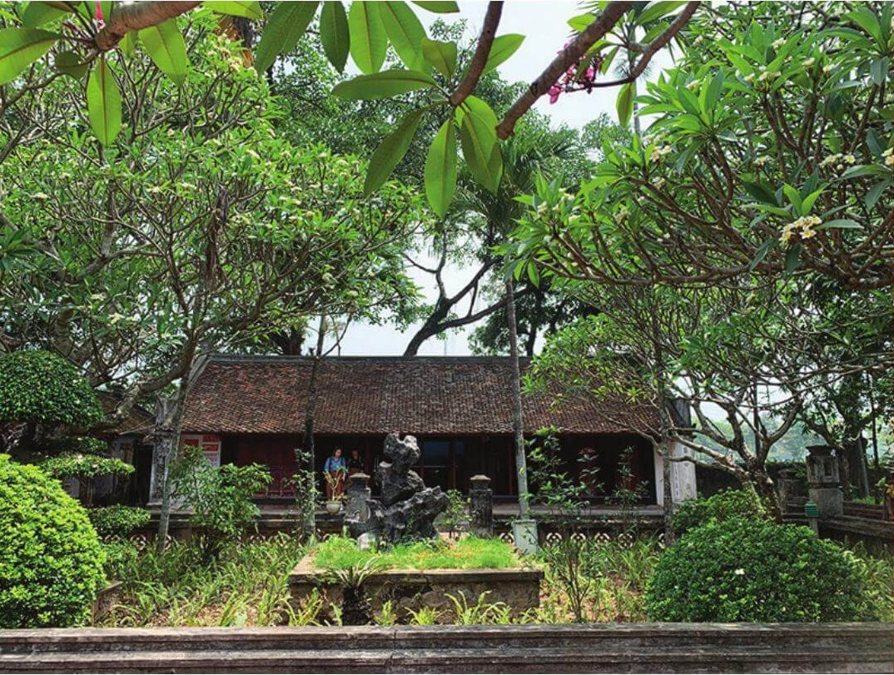

CỐ ĐÔ HOA LƯ
딘·전레 시대 문화유산 전시관

방문객 여러분, 호아루 도읍의 형성과 찬란했던 발전을 생생하게 증명하기 위해 1977년에 고고학자들은 이 지역에서 대규모 발굴 조사를 실시했습니다. 이를 통해 고고학자들은 10세기 딘-전레 왕조 시기의 벽돌이 깔린 궁궐 안뜰 터를 성공적으로 발견했습니다.
이 지역에서의 발굴 결과는 과거 호아루 도읍의 중심 지역이 오늘날 호아루 고도 유적지의 중심부와 일치한다는 사실을 과학적으로 확인시켜 주었습니다.
전시관은 현재 과학적 자료 및 직관적인 미술 기법과 결합하여 풍부한 원본 유물을 다수 보존하고 있으며, 10세기 호아루 도읍의 전반적인 모습은 물론 현대 생활 속에서 유적지의 가치를 보존하고 발전시키는 작업들을 개괄적으로 보여주고 있습니다.

전시 공간에 들어서면 항아리, 독, 사발, 접시 등 10세기의 대표적인 유물들을 감상할 수 있습니다. 특히 딘-전레 시대에 탄생한 "태평흥보(Thái Bình Hưng Bảo)"와 "천복진보(Thiên Phúc Trấn Bảo)" 화폐 컬렉션은 민족 독립 의식을 확인시켜 줄 뿐만 아니라 국가 경제 발전에도 기여했습니다.
도읍 건설에 사용된 매우 귀중한 원자재 컬렉션도 이곳에 전시되어 있는데, "대월국군성전(Đại Việt quốc quân thành chuyên, 대월국 군성 벽돌)"이라는 글귀가 새겨진 벽돌, 연꽃과 봉황 모양으로 장식된 벽돌, 그리고 당시 궁중 건축의 특징인 다양한 종류의 기와(ngói ống) 등이 있습니다.
관광객들은 딘 띠엔 황 왕의 장남인 남월왕 딘 쾅 리엔(Đinh Khuông Liễn)이 건립하게 한 불경 기둥(Cột kinh Phật, 다라니 석당)을 감상할 수 있습니다. 이는 베트남의 비문 및 석각 체계에서 유례를 찾아보기 힘든 특징을 지닌 유일무이한 형태의 원본 유물입니다. 경전에 새겨진 명문 내용은 딘 왕조 시대의 종교, 사회 관계, 토지 분배 제도 등의 문제를 깊이 있게 반영하는 무수히 귀중한 역사적 사료를 제공합니다. 주목할 점은 이것이 현재까지 보존된 자주 봉건 시대의 비문 중 가장 이른 시기의 연대를 가지고 있다는 것입니다. 이러한 특별하고 대표적인 역사 및 문화 가치를 인정받아, 2024년 불경 기둥 컬렉션은 국무총리의 서명 결정으로 국보로 지정되는 영예를 안았습니다.
전시된 유물들을 통해 우리는 딘-전레 시대 유물들의 장식 주제가 표현 방식에 있어서는 소박하고 단순하지만 짙은 민족 문화의 정체성을 담고 있음을 알 수 있습니다. 바로 그 예술적 기반이 이어지는 역사적 시기 동안 베트남 문화가 찬란하게 발전해 나갈 수 있는 기본적인 전제 조건들을 마련해 주었습니다.